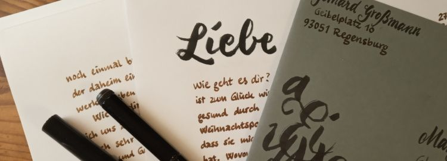

@charak
@charakHandgeschriebene Briefe
Etwa alle fünf Wochen schreibe ich mal wieder einen persönlichen Brief. Anlass kann ein Geburtstag oder Feiertag sein, eine Antwort auf eine Glückwunschkarte; oft ist es Post für eine meiner zwei Briefbekanntschaften. In der Regel schreibe ich drei bis acht Seiten (meist DIN A5), stecke sie in einen Umschlag und schicke sie per Post auf die Reise Richtung Norden.

Ja, ich weiß: Private Briefe sind in Zeiten von E-Mail und WhatsApp kaum noch üblich. Und klar, ich könnte auch hier im Blog oder auf social media darüber schreiben, welche Stücke wir gerade im Chor proben, was für schöne Matheaufgaben mich beschäftigen, wann ich Kuchen gebacken habe und worum es in meiner aktuellen Lektüre geht. Teilweise veröffentliche ich solche Dinge tatsächlich hier im Blog oder auf Twitter. Aber das ist nicht dasselbe.
Lange Laufzeit vertieft Gespräche
Briefe fördern meiner Erfahrung nach ein intensives Zwiegespräch. Man handelt ein Thema nicht kurz ab, sondern versucht zu vertiefen und sich wirklich Gedanken dazu zu machen. Erstens hat man genug Zeilen frei und muss einen Halbsatz nicht schnell abschicken, um ein Gespräch am Laufen zu halten (wie im Chat). Zweitens wird die Antwort auf mein Geschriebenes nicht nach wenigen Minuten eintreffen, sondern erst Wochen später. Wenn ich ein Thema unter diesen Bedingungen am Laufen halten möchte, muss ich schon etwas Substanzielles und Wohlüberlegtes dazu schreiben.
Offline schreiben ohne Ablenkung
Es ist für mich eine willkommene Abwechslung, mich in Ruhe an den Schreibtisch zu setzen und – vielleicht bei einer Tasse Tee – einen Brief zu verfassen. Mir zu überlegen, was ich erzählen möchte, mir Notizen zu machen und schließlich anzufangen, weiterzuschreiben und abzuschließen.
Ich gebe zu, einen mehrseitigen Brief schreibe ich nicht in einem Rutsch. Manchmal möchte ich Termine oder andere Infos nachprüfen, noch den Einkauf erledigen, eine weitere Tasse Tee kochen, … Grundsätzlich ist analoges Briefeschreiben aber doch eine recht konzentrierte und sorgfältige Tätigkeit – ohne die Ablenkung, die moderne Kommunikationsgeräte bereithalten. Ein bisschen digital detox, bei dem ich das Gefühl habe, sehr produktiv zu sein.
Papier regt Kreativität an
Apropos produktiv, ich bin ja gerne schöpferisch: male, zeichne und betreibe Kalligrafie. Briefe nehme ich da oft her, um neue Ideen auszuprobieren. Zum Beispiel übe ich derzeit das Schreiben mit einem Pinselstift und habe den letzten Brief mit meinen ersten Grundstrichen verziert. Oder ich bestemple den Rand mit Blumenranken, klebe farbiges Washi-Tape entlang der Blattkante, male Tupfen mit Wasserfarbe auf … Briefe ermuntern mich, solche Gestaltungsideen einfach mal auszuprobieren.
Sehr gerne lege ich noch verschiedene Dinge mit in den Umschlag. Sie haben manchmal einen direkten Bezug zum Inhalt, manchmal finde ich sie aber auch einfach nur schön. Zum Beispiel kann das ein Ginkgo-Blatt sein, ein aktuell entworfener Flyer, etwas Tee oder Gewürz, eine Collage, eine Origami-Figur oder eine gepresste Schwertlilie aus meinem Garten.
Eine besondere Kommunikation
Durch die verlangsamte Interaktion, das eher überlegte Schreiben und die persönliche Gestaltung übermittelt ein Brief viel mehr als seinen bloßen Inhalt. Ich bin froh, dass ich Menschen habe, mit denen ich mich auf diese Art austauschen kann (schließlich ist Briefe zu verschicken erst dann richtig schön, wenn man auch eine Antwort erhält).
Versendet ihr eigentlich noch private Briefe? Zu welchem Anlass? Wie gestaltet ihr eure Post? Wer übrigens gerne mal einen Brief von mir bekommen möchte, schreibe einfach selbst einen an meine Adresse. Ich antworte dann in gleicher Weise – es kann aber ein wenig dauern (kommt dann aber umso überraschender ☺).